운영 중인 제품에 버그와 기능 요청이 들어오면 대화나 작업 접수 앱에 그대로 적습니다. Lite가 기록과 코드를 읽어 범위와 건드릴 유닛을 계획안으로 내놓고, 시작할지 줄에 세울지는 사람이 정합니다. 볼트 줄에서는 볼트가 릴리스 순서대로 서 있고, 서로 기다리는 볼트는 함께 옮기며, 문제가 보이면 멈추고 폐기합니다.
왜 필요한가#
31장과 32장은 요청 하나를 처음부터 끝까지 만드는 이야기였습니다. 제품을 한 번 내보내고 나면 일이 달라집니다. 버그 신고와 기능 요청이 계속 들어오고, 세션은 하나인데 할 일은 여럿입니다. 그때마다 사람이 정해야 할 것이 있습니다.
- 이 요청은 AI-DLC의 어느 범위(bugfix · feature · classic …)로 돌릴까? 버그 하나에 classic을 돌리면 단계가 너무 많고, 큰 기능을 bugfix로 돌리면 설계를 건너뜁니다.
- 어느 유닛을 건드리나? 이미 만든 유닛이 여섯 개인데, 요청을 적은 사람은 유닛 이름을 모릅니다.
- 지금 도는 작업이 있으면 언제 시작하나? 그리고 줄에 선 일들은 어느 릴리스에 나가나?
- 새 요청이 지금 만들고 있는 것과 부딪히면? 만들던 것을 버려야 하면?
| 하던 방식 | 작업 접수와 볼트 줄에서 |
|---|---|
요청을 받은 사람이 범위를 짐작해 /aidlc <범위>를 직접 입력 |
요청을 말로 적으면 계획안: 추천 범위, 건드릴 유닛·계약·요구사항·코드, 그렇게 본 까닭 |
| 지금 도는 작업이 끝났는지 물어보고 기다림 | 줄 끝에 세우기: 유닛마다 예상 볼트가 줄 끝에 서고, 앞이 비면 사람이 시작 |
| 어느 일이 어느 릴리스에 나가는지 표로 따로 관리 | 볼트 줄: 출시됨 · 이번 릴리스 · 다음 릴리스 · 줄 끝. 기다리는 볼트를 두고 혼자 앞으로 못 감 |
| 부딪히는 요청은 만들고 나서야 발견 | 계획안에 줄에 있는 볼트와 부딪히는 곳과 그 까닭 |
| 문제를 본 사람이 팀 리드를 찾아다님 | 멈춤 요청. 보안 문제면 세션을 바로 멈추고, 이어 갈지 폐기할지는 권한자가 정함 |
| 버린 작업의 흔적이 코드에 남음 | 폐기: 그 볼트가 바꾼 파일을 시작 전으로 되돌리고, AI-DLC 기록은 남김 |
준비#
| 항목 | 내용 |
|---|---|
| 팀 세션 | 31장처럼 AI-DLC 저장소를 연결형 폴더로 붙이고 역할을 정합니다. 한 회사에 AI-DLC 프로젝트가 하나면 대화에서 프로젝트를 묻지 않습니다 |
| 실습 저장소 | 32장에서 classic으로 끝낸 「팀 회의실 예약」 저장소(유닛 6개, 1차 릴리스 출시). 이 장의 요청은 모두 이 저장소에 더하는 일입니다 |
| 등장인물 | 팀 리드 한지수, PO 오세린, QA 윤서준. 작업 접수와 멈추기·폐기는 팀 리드와 PO가 할 수 있고, QA는 멈춤을 요청할 수 있습니다 |
따라 하기 1 — 대화에 적어 접수하고 바로 시작하기#
- 한지수로 로그인해 채팅에 적습니다.
작업 접수: 예약 알림 메일이 두 번 와요. 같은 예약인데 10분 전 알림이 두 통씩 옵니다. - 50초쯤 지나면 대화에 계획안 카드가 옵니다. 제목은 「10분 전 알림 메일 중복 발송」, 범위는
bugfix(추천)입니다. 홈에도 「회의실 예약 · 「10분 전 알림 메일 중복 발송」 계획안이 나왔어요」 카드가 뜹니다. - 카드 아래의 어떻게 가늠했는지 · 다른 요청 보기 →를 누르면 옆에 작업 접수 앱이 크게 열립니다. 건드리는 곳은 유닛
u5-notification-worker하나, 계약 C5·C6·C7, 요구사항 FR6.4·FR6.6·NFR5이고, 코드 후보로packages/worker/src/dispatches.ts같은 파일이 나옵니다. - 오른쪽 위의 숫자 36 · Focused는 AI-DLC가 계산한 점수(ARS)입니다. 그 아래 「어떻게 가늠했나」에 다섯 점수(요청의 모호함, 코드의 얽힘, 확인 근거 부족, 틀렸을 때 위험, 숨은 가정)가 있습니다. 점수마다 무엇을 보고 매겼는지도 한 줄씩 적혀 있습니다.
- 「언제 시작할까요」에서 지금 시작을 고르고 이 계획으로 시작을 누릅니다. 도는 작업이 없으니 바로 시작할 수 있습니다.
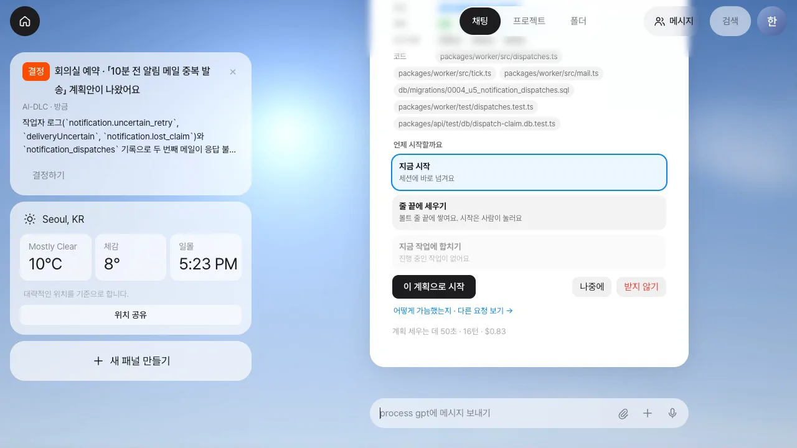

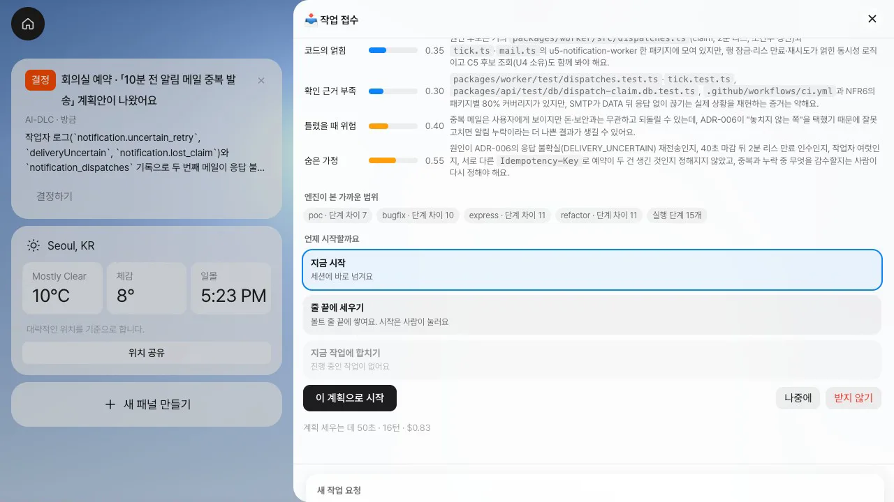
범위는 추천입니다
추천 범위는 「bugfix · 추천」 목록에서 다른 범위로 바꿀 수 있고, 유닛이 틀렸으면 영향 범위 확인에서 고칩니다. 계획안은 기록에 있는 유닛·계약·요구사항만 싣습니다. 추정 결과에 기록에 없는 이름이 있으면 계획안에서 빼고, 뺀 이름을 따로 보여 줍니다.
- Claude Code가 이 폴더를 처음 열면 이 폴더를 믿고 시작할까요? 창이 뜹니다. 폴더 설정에서 미리 허용한 도구 수(이 저장소는 45개)를 읽고 믿고 시작을 누릅니다. 답한 사람과 시각은 원장에 남습니다.
- 팀 세션에
/aidlc bugfix "예약 알림 메일이 두 번 와요. …"가 들어갑니다. 대화의 카드는 「한지수 님이 시작했어요. 볼트 줄에서 보기 →」로 바뀝니다. - 세션에서 엔진이 의도를 만들면(
Intent created: 261112-duplicate-reminder-mail, bugfix · 6단계 · Brownfield) 몇 초 뒤 볼트 줄에 B7이 「도는 중」으로 섭니다.
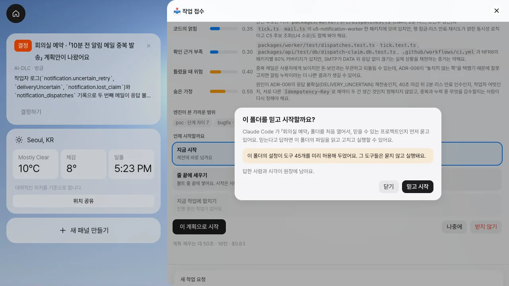
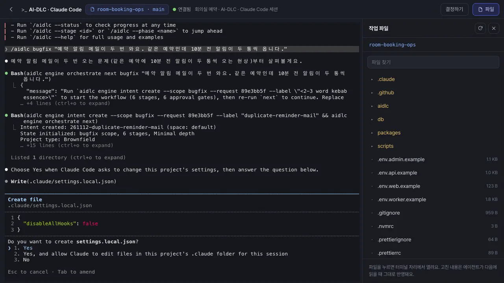
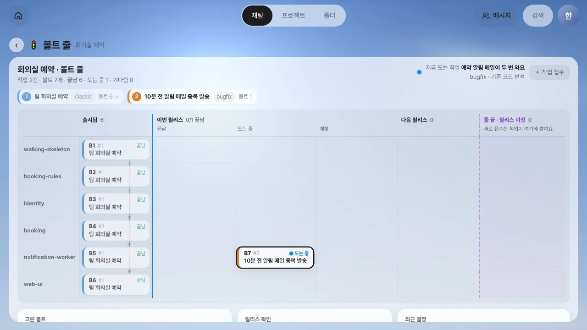
따라 하기 2 — 줄 끝에 세우고, 기다리는 볼트와 함께 옮기기#
- 오세린으로 로그인해 폴더에서
회의실 예약을 열고 앱 단추 작업 접수를 누릅니다. 「새 작업 요청」 칸 아래에 「접수 권한 있음 — 계획안을 보고 바로 정해요」가 보입니다. - 요청을 적고 계획안 받기를 누릅니다.
매주 같은 요일, 같은 시간에 되풀이되는 반복 예약을 만들 수 있게 해 주세요. - 1분쯤 뒤 「매주 반복 예약 만들기」 계획안이 나옵니다. 범위는
feature(추천), ARS 46 · Standard이고, 건드리는 유닛은u4-booking·u2-booking-rules·u6-web-ui셋입니다. - 「언제 시작할까요」에서 「지금 시작」은 닫혀 있습니다. 한지수의 버그 수정이 돌고 있기 때문입니다. 앞 작업 뒤에 세우기를 고르고 이 계획으로 줄에 세우기를 누릅니다. 급한 버그나 보안 수정이면 「빠른 줄」에 표시해 기다리는 작업의 맨 앞에 세웁니다.
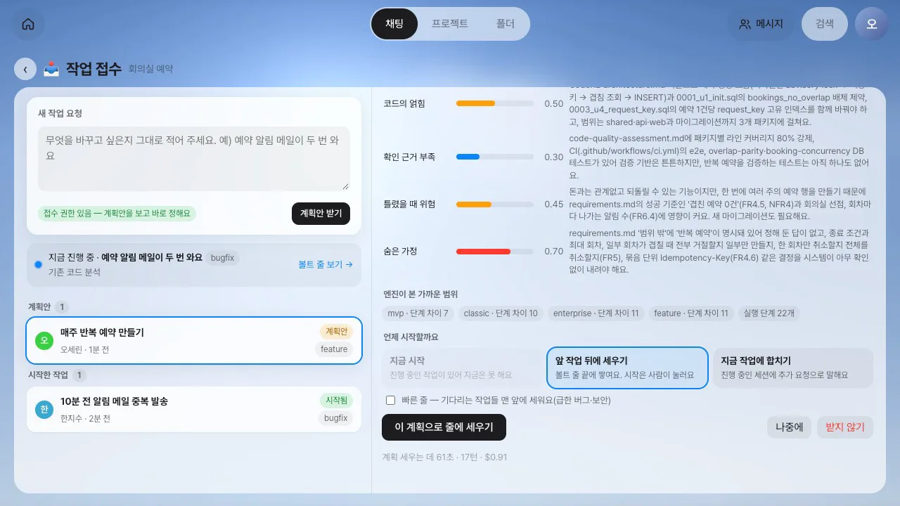
- 볼트 줄 보기 →로 볼트 줄을 엽니다. 「줄 끝 · 릴리스 미정」 칸에 예상 볼트 셋이 섰습니다: B8(
u2-booking-rules), B9(u4-booking), B10(u6-web-ui). 머리글은 「작업 3건 · 볼트 10개 · 끝남 6 · 도는 중 1 · 기다림 3」입니다. - B10을 누르면 화살표가 그려집니다. B10은 B9를(계약 C2), B9는 B8을(계약 C3) 기다립니다. 계약을 주는 유닛이 먼저 끝나야 받는 유닛을 만들 수 있기 때문입니다.
- 「고른 볼트」의 릴리스 옮기기에서 다음 릴리스를 누릅니다. 옮겨지지 않고 까닭이 나옵니다. 「B10 u6-web-ui 볼트만 다음 릴리스(으)로 옮길 수는 없어요」, 먼저 끝나야 하는 B9와 B8이 줄 끝에 남기 때문입니다.
- 볼트 3개를 함께 옮기기를 누릅니다. 셋이 함께 「다음 릴리스」 칸으로 갑니다.
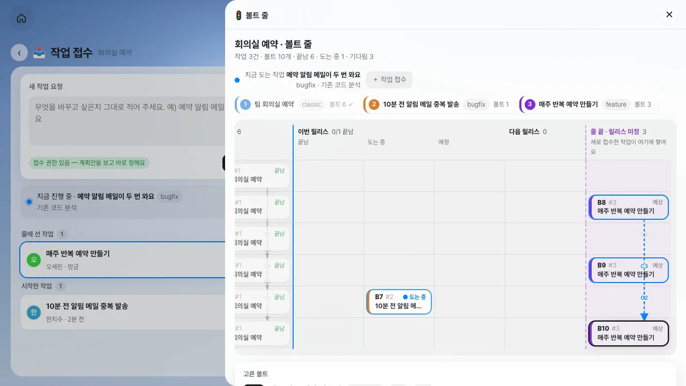

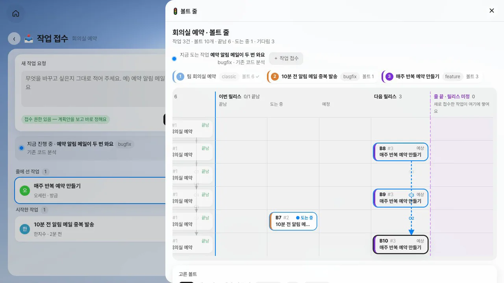
따라 하기 3 — 줄에 있는 볼트와 부딪히는 요청#
- 오세린이 요청을 하나 더 적습니다.
예약 알림을 메일 대신 슬랙으로 보내 주세요. 메일 발송은 없앱니다. - 「예약 알림을 메일에서 슬랙으로 전환」 계획안(feature, ARS 49 · Standard, 유닛
u5-notification-worker·u1-walking-skeleton)에 줄에 있는 볼트와 부딪히는 곳이 붙어 나옵니다. 지금 도는 B7(메일 중복 수정)을 이름으로 가리키고, 이 요청의 말(「메일 발송은 없앱니다」)과 그 볼트의 말을 나란히 놓고 까닭을 적습니다. - 칩은 「함께 갈 수 있음」 또는 「둘 중 하나만」입니다. 이 실습에서는 「함께 갈 수 있음」으로 나왔습니다. 없앨 메일 발송 기능을 고치는 중이라고 알려 주지만, 둘 중 무엇을 살릴지는 사람이 정합니다. 볼트 줄에서 보기로 그 볼트를 바로 볼 수 있습니다.
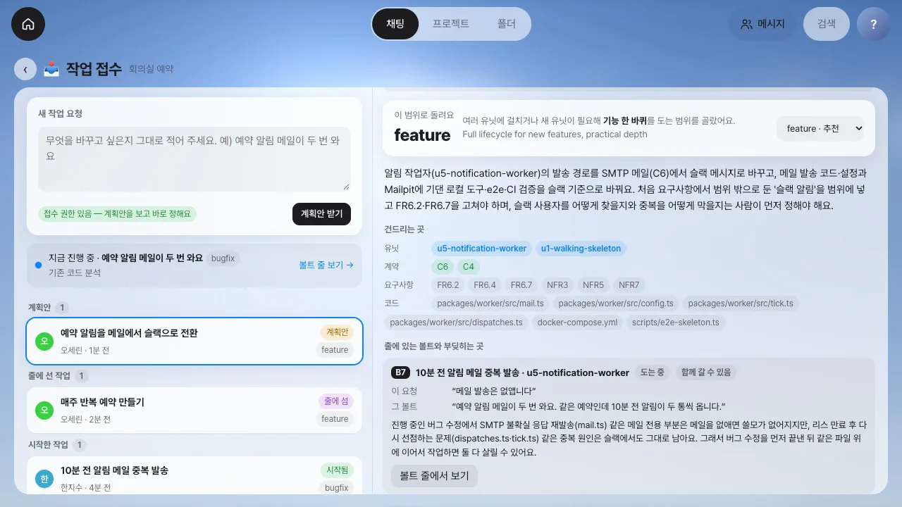
따라 하기 4 — 보안 멈춤과 폐기#
- 윤서준으로 로그인해 볼트 줄에서 B7을 누릅니다. QA에게는 멈추기 단추 대신 ✋ 멈춤 요청이 있고, 「멈추기·폐기는 한지수, 오세린 님이 할 수 있어요」라고 적혀 있습니다.
- 멈춤 요청을 누르고 보안 문제예요 — 세션을 바로 멈춰요에 표시한 뒤 까닭을 적고 요청을 누릅니다.
이 수정이 운영 메일 설정을 건드릴 수 있어요. 보안 검토가 끝날 때까지 멈춥니다. - 「세션을 바로 멈추고 알렸어요」가 뜨고, B7에 「⏸ 멈춤」과 「보안 멈춤」 표시가 붙습니다. 세션에는 Esc 한 번만 들어갑니다. 그때 세션은 설정 파일을 쓸지 묻고 있었고, 그 자리에서 멈췄습니다.
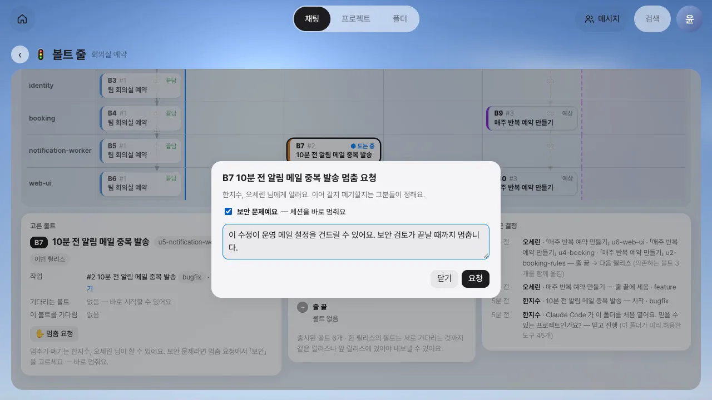
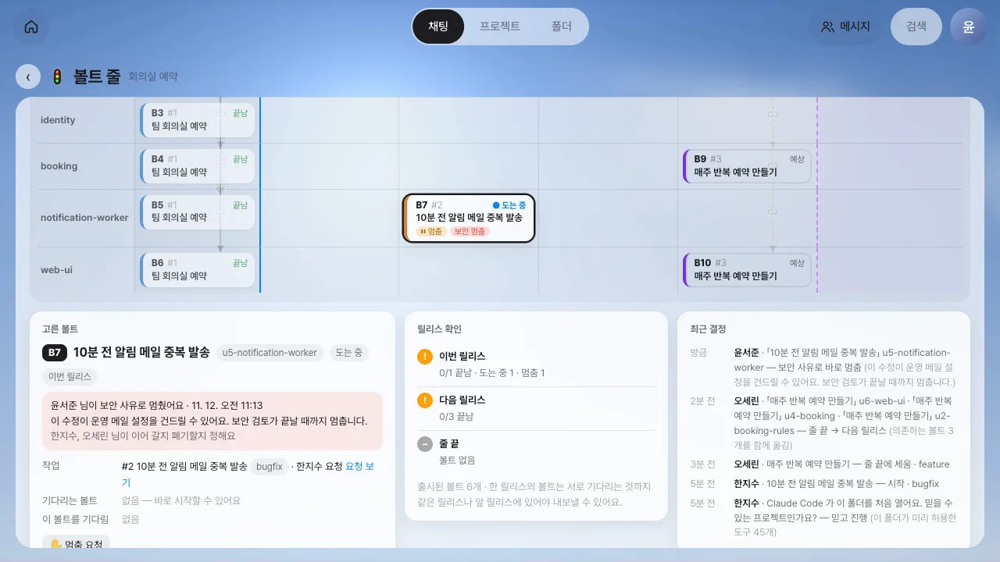
- 한지수의 홈에 「회의실 예약 · 보안 사유로 작업을 멈췄어요」 카드가 옵니다. 볼트 줄에서 B7을 누르면 윤서준이 적은 까닭이 보이고, 단추는 ▶ 다시 진행과 폐기입니다.
- 폐기를 누르면 무엇이 일어날지 먼저 보여 줍니다. 되돌릴 파일과 치울 새 파일의 수, 그리고 「이 작업의 마지막 볼트예요 — AI-DLC 기록에서도 인텐트를 보관함으로 옮기기」. 까닭을 적어야 폐기가 눌립니다.
알림을 슬랙으로 바꾸기로 해서 메일 중복 수정은 필요 없어졌어요. - 「멈추고 폐기했어요」가 뜨고 B7은 취소선과 「폐기」 표시로 남습니다. 줄 머리에는 「줄 앞이 비었어요 · 다음: 매주 반복 예약 만들기」와 다음 작업 시작이 보입니다. 다음 작업은 스스로 시작하지 않습니다.
- 「최근 결정」에 이날의 작업 과정이 모두 남아 있습니다. 폴더를 믿고 시작, 시작, 줄 끝에 세움, 함께 옮김, 보안 멈춤, 폐기까지 누가 어떤 까닭으로 했는지 보입니다.

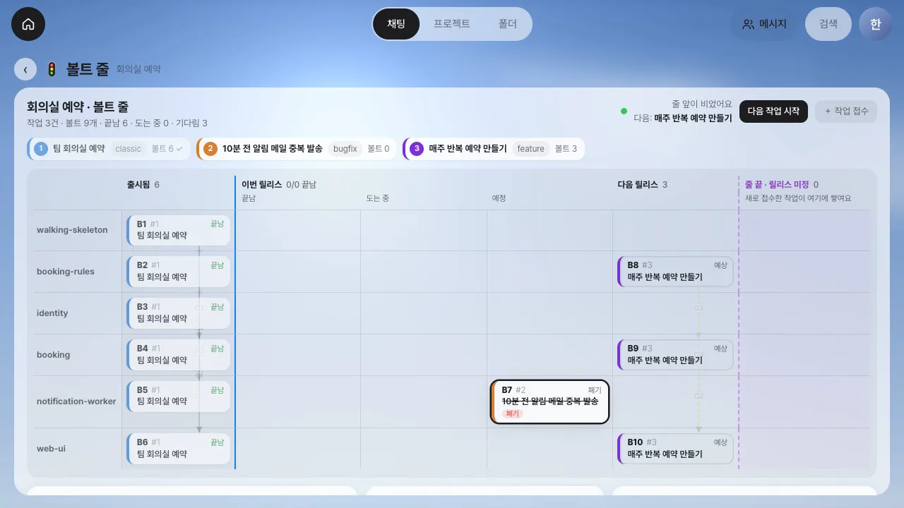
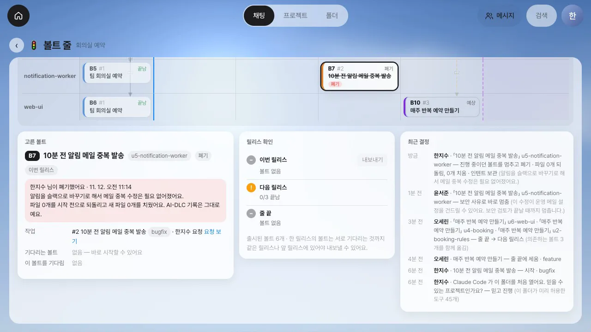
알아 둘 점#
- 계획안은 추천이고, 단추를 누르는 것은 사람입니다. 시작·줄에 세우기·합치기는 접수 권한이 있는 사람(팀 리드, PO, 폴더 소유자)이 정합니다. 권한이 없는 사람이 적은 요청은 접수함으로 가고, 누가 정하는지 알려 줍니다. 줄 앞이 비어도 다음 작업을 스스로 시작하지 않습니다.
- 계획을 세우는 데 드는 시간과 비용: 이 실습에서 요청 셋은 53 · 64 · 86초, 16~18턴, 한 번에 0.8~0.9달러쯤 들었습니다. 추정은 팀 세션과 별도로 Claude Code를 한 번 실행하므로 도는 작업을 방해하지 않습니다.
- 부딪힘은 모델의 판단입니다. 놓치거나 잘못 짚을 수 있습니다. 이 실습의 판단은 「함께 갈 수 있음」이었고, 「둘 중 하나만」이 나오는 화면은 시험으로만 확인했습니다.
- 폐기가 되돌리는 범위: 볼트를 시작할 때의 파일 상태를 기준으로, 그 뒤에 바뀐 파일은 되돌리고 새로 생긴 파일은 치웁니다.
aidlc/기록은 손대지 않습니다. 왜 버렸는지가 기록으로 남아야 하기 때문입니다. 이 실습은 코드를 고치기 전에 폐기해서 되돌릴 파일이 0개였습니다. - 보안 멈춤은 폴더 구성원 누구나 걸 수 있고 권한을 묻지 않습니다. 세션에는 Esc 하나만 보냅니다. 세션이 뒤에서 돌려 둔 하위 에이전트까지 한 번에 멈추는지는 확인하지 못했고, 폐기할 때 세션에 그만하라는 말을 따로 보냅니다.
- 한 번에 도는 세션은 하나입니다. 유닛마다 작업 트리를 나눠 동시에 돌리는 것, 메신저 방에서 접수하는 것은 아직 없습니다.
- 홈의 「계획안이 나왔어요」 카드 본문에는 코드 이름을 감싼 백틱이 그대로 보입니다. 계획안 창에서는 코드 글자로 보입니다.
8부 「산업별 예시」를 마칩니다. 다음 장에서는 지금까지 배운 것을 활용해 새 고객 요청 한 건을 처음부터 끝까지 처리하는 종합 과제를 합니다(34장).
확인 문제
- 「예약 알림 메일이 두 번 와요」를 접수했더니 범위가
bugfix로 추천됐습니다. 이 요청이 설계까지 다시 봐야 하는 일이라고 생각하면 어떻게 합니까? - 오세린이 반복 예약을 접수할 때 「지금 시작」이 닫혀 있었습니다. 왜입니까? 줄에 세운 작업은 언제, 누가 시작합니까?
- B10(
u6-web-ui)만 다음 릴리스로 옮기려 했더니 막혔습니다. 무엇 때문이고, 어떻게 옮깁니까? - QA 윤서준에게는 멈추기 단추가 없습니다. 보안 문제를 봤을 때 세션은 언제 멈춥니까? 그 뒤는 누가 정합니까?
- 도는 볼트를 폐기하면 코드와 AI-DLC 기록은 각각 어떻게 됩니까?
답
- 계획안의 범위 목록에서 다른 범위(예:
feature)로 바꾸고 시작합니다. 추천은 추천일 뿐이고, 바꾼 범위에는 「사람이 바꾼 범위예요」라고 표시됩니다. - 한지수의 버그 수정이 돌고 있었기 때문입니다. 세션은 한 번에 하나만 돕니다. 줄 앞이 비면 볼트 줄 머리에 「다음 작업 시작」이 뜨고, 접수 권한이 있는 사람이 누릅니다.
- B10은 B9를(계약 C2), B9는 B8을(계약 C3) 기다리는데, 둘이 줄 끝에 남으면 B10이 먼저 나갈 수 없습니다. 「볼트 3개를 함께 옮기기」로 셋을 함께 옮깁니다.
- 멈춤 요청에서 「보안 문제예요」에 표시하고 까닭을 적어 요청하면 그 자리에서 멈춥니다. 이어 갈지 폐기할지는 멈춤 권한이 있는 팀 리드와 PO가 정합니다.
- 그 볼트가 시작한 뒤 바뀐 파일은 시작 전으로 되돌리고 새 파일은 치웁니다. AI-DLC 기록은 그대로 남고, 마지막 볼트였다면 의도가 보관함으로 옮겨집니다.